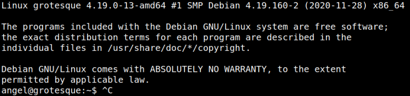
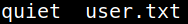
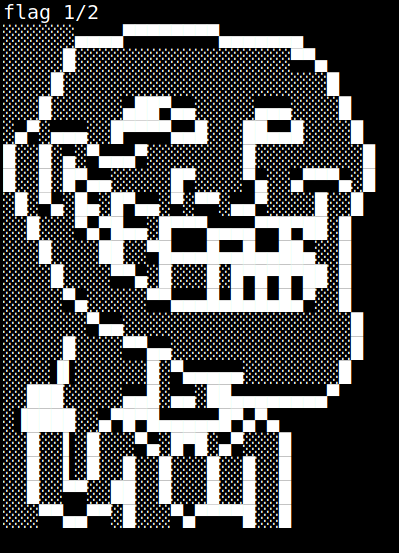

4.1 Login as "angel" (First flag)
1. On your Kali Machine log in via SSH as “angel”. Password “solomon1”.
$ssh angel@192.168.12.25
Output:

2. List the file.
angel@grotesque:~$ls
Output:

3. Show the file “user.txt”.
angel@grotesque:~$cat user.txt
Output:
